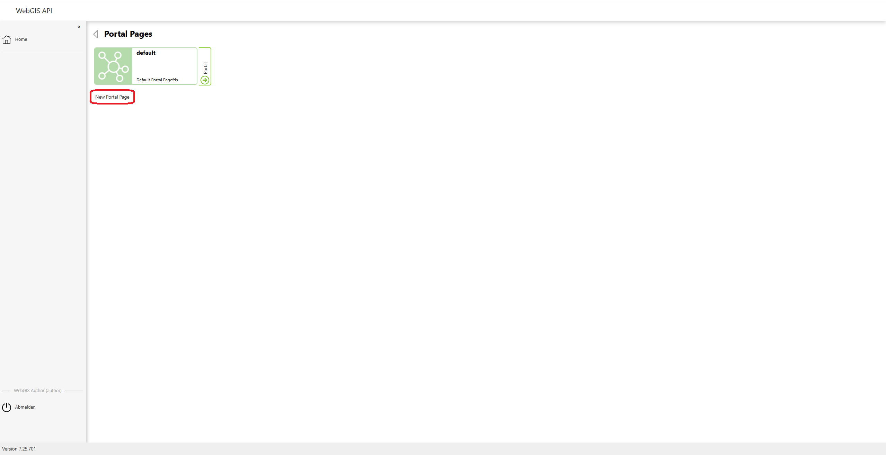
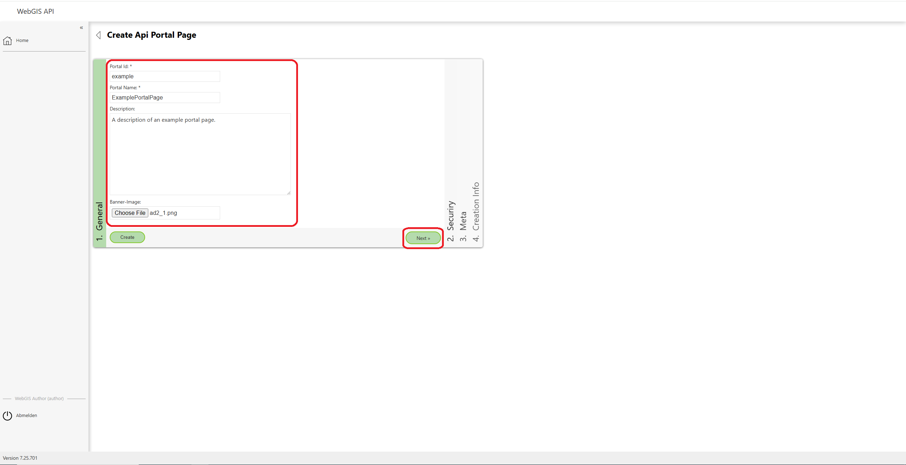
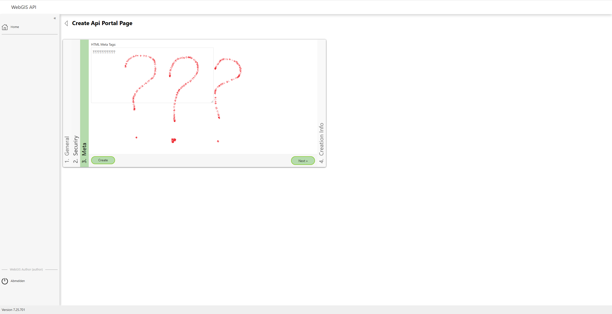

Portal Pages anlegen und verwalten¶
Um eine Portal Page zu erstellen oder zu verwalten, müssen Sie sich zunächst bei der WebGIS API anmelden. Nachdem Sie angemeldet sind, können Sie über den Menüpunkt Portal Pages eine Übersicht der bereits angelegten Seiten aufrufen sowie neue Seiten anlegen und konfigurieren.
Portal Pages Übersicht¶
Klicken Sie auf den Menüpunkt Portal Pages, um zur Übersicht der bestehenden Portal Seiten zu gelangen.

In der Übersicht können Sie die bereits angelegten Seiten einsehen. Um eine neue Portal-Seite zu erstellen, klicken Sie auf den Button „New Portal Page“.
Neuen Portal Page anlegen¶
Durch einen Klick auf den Button „New Portal Page“ gelangen Sie zum Formular, in dem Sie eine neue Portal-Seite anlegen und parametrieren können.
Allgemeine Informationen¶
Im General-Formular können Sie die grundlegenden Informationen für die neue Portal-Seite festlegen: - ID der Seite - Name der Seite - Beschreibung der Seite - Bild für das Banner der Seite
Nachdem Sie die Felder ausgefüllt haben, klicken Sie auf den Button „Next“, um zu den Security-Einstellungen zu gelangen.
Sicherheits-Einstellungen¶
Unter den Security-Einstellungen können Sie die folgenden Benutzer und Berechtigungen festlegen: - Authorized Users: Nutzer, die Zugang zur Portal-Seite haben - Authorized (Map) Authors: Nutzer, die Karteninhalte hinzufügen dürfen - Authorized (Content) Authors: Nutzer, die Content hinzufügen dürfen
Jeder dieser Benutzer kann als Subscriber oder Instance hinzugefügt werden. Klicken Sie auf Next, um zu den HTML Meta Tags zu gelangen.

HTML Meta Tags¶
Hier können HTML Meta Tags für die Portal-Seite konfiguriert werden. (Details zu Meta Tags folgen noch.)
Erstellungsinformationen¶
Im Abschnitt Creation Infos sehen Sie das Datum und die Uhrzeit der Erstellung der Portal-Seite sowie den Owner der Seite. Diese Informationen dienen nur zur Anzeige und können nicht geändert werden.
Klicken Sie auf den Button „Create“, um die neue Portal-Seite zu speichern und den Anlegeprozess abzuschließen.

Erstellte Portal-Seite¶
Nach dem Erstellen der Portal-Seite wird diese in der Übersicht angezeigt. Ihre Seite wurde nun erfolgreich angelegt.

Portal Page bearbeiten¶
Um eine bereits erstellte Portal-Seite zu bearbeiten, klicken Sie einfach auf die gewünschte Seite in der Übersicht. Sie können die Felder ändern oder ergänzen und anschließend auf den Button „Update“ klicken, um die Änderungen zu speichern.